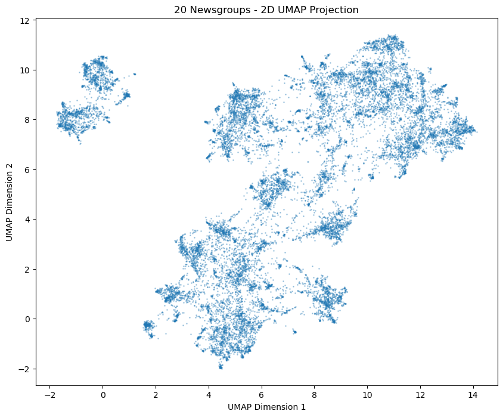
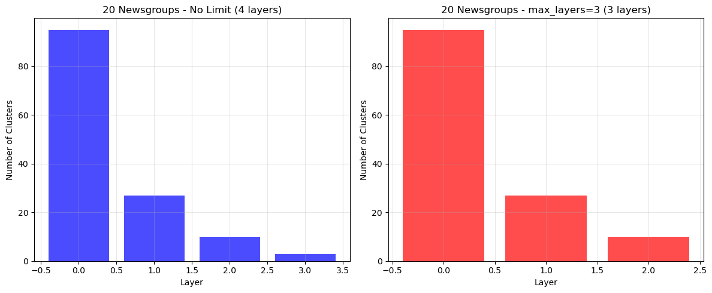
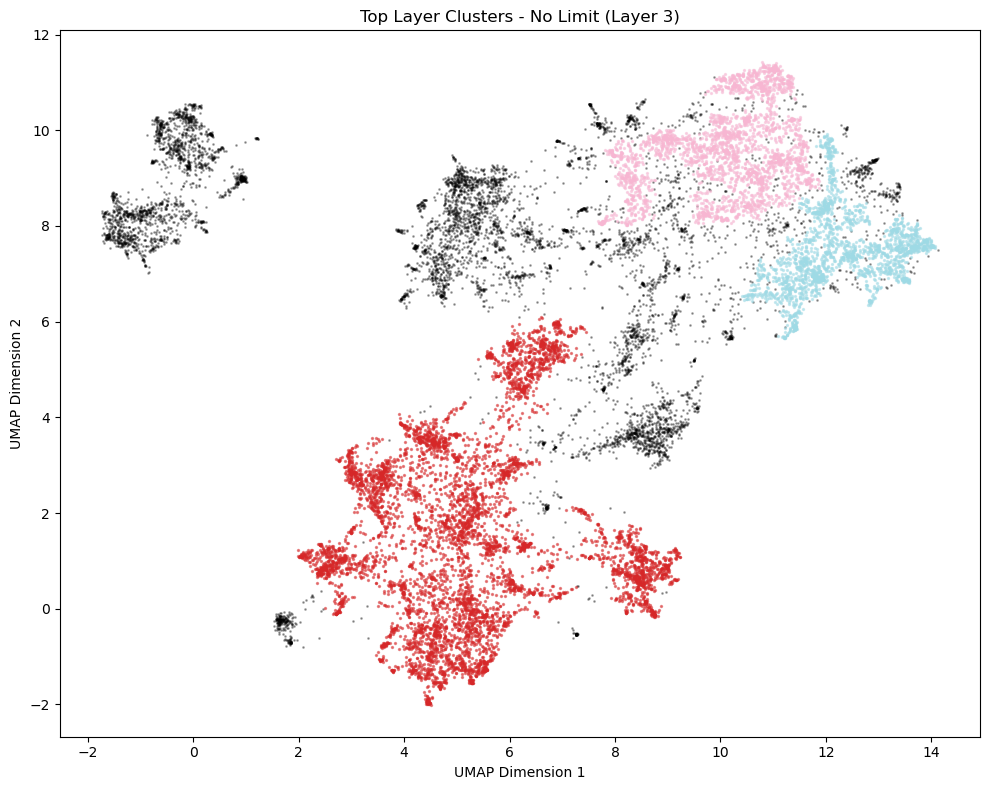
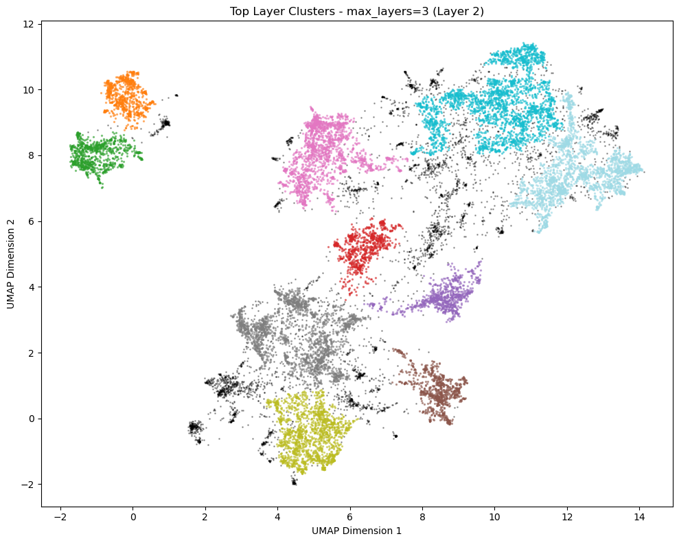
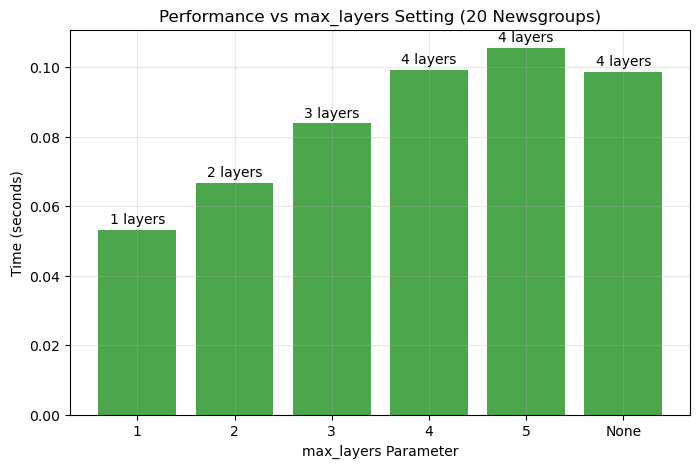

Testing max_layers Functionality with 20 Newsgroups Dataset
This notebook demonstrates the max_layers parameter using the 20 newsgroups dataset with pre-computed embeddings.
[ ]:
# Install required packages if needed
!pip install pandas pyarrow
[1]:
# Import necessary libraries
import numpy as np
import pandas as pd
import matplotlib.pyplot as plt
from toponymy.clustering import (
build_raw_cluster_layers,
ToponymyClusterer
)
from toponymy.cluster_layer import ClusterLayerText
import time
OMP: Info #276: omp_set_nested routine deprecated, please use omp_set_max_active_levels instead.
A module that was compiled using NumPy 1.x cannot be run in
NumPy 2.0.2 as it may crash. To support both 1.x and 2.x
versions of NumPy, modules must be compiled with NumPy 2.0.
Some module may need to rebuild instead e.g. with 'pybind11>=2.12'.
If you are a user of the module, the easiest solution will be to
downgrade to 'numpy<2' or try to upgrade the affected module.
We expect that some modules will need time to support NumPy 2.
Traceback (most recent call last): File "/Users/keyu/miniconda3/envs/toponymy-test/lib/python3.9/runpy.py", line 197, in _run_module_as_main
return _run_code(code, main_globals, None,
File "/Users/keyu/miniconda3/envs/toponymy-test/lib/python3.9/runpy.py", line 87, in _run_code
exec(code, run_globals)
File "/Users/keyu/miniconda3/envs/toponymy-test/lib/python3.9/site-packages/ipykernel_launcher.py", line 18, in <module>
app.launch_new_instance()
File "/Users/keyu/miniconda3/envs/toponymy-test/lib/python3.9/site-packages/traitlets/config/application.py", line 1075, in launch_instance
app.start()
File "/Users/keyu/miniconda3/envs/toponymy-test/lib/python3.9/site-packages/ipykernel/kernelapp.py", line 739, in start
self.io_loop.start()
File "/Users/keyu/miniconda3/envs/toponymy-test/lib/python3.9/site-packages/tornado/platform/asyncio.py", line 211, in start
self.asyncio_loop.run_forever()
File "/Users/keyu/miniconda3/envs/toponymy-test/lib/python3.9/asyncio/base_events.py", line 601, in run_forever
self._run_once()
File "/Users/keyu/miniconda3/envs/toponymy-test/lib/python3.9/asyncio/base_events.py", line 1905, in _run_once
handle._run()
File "/Users/keyu/miniconda3/envs/toponymy-test/lib/python3.9/asyncio/events.py", line 80, in _run
self._context.run(self._callback, *self._args)
File "/Users/keyu/miniconda3/envs/toponymy-test/lib/python3.9/site-packages/ipykernel/kernelbase.py", line 545, in dispatch_queue
await self.process_one()
File "/Users/keyu/miniconda3/envs/toponymy-test/lib/python3.9/site-packages/ipykernel/kernelbase.py", line 534, in process_one
await dispatch(*args)
File "/Users/keyu/miniconda3/envs/toponymy-test/lib/python3.9/site-packages/ipykernel/kernelbase.py", line 437, in dispatch_shell
await result
File "/Users/keyu/miniconda3/envs/toponymy-test/lib/python3.9/site-packages/ipykernel/ipkernel.py", line 362, in execute_request
await super().execute_request(stream, ident, parent)
File "/Users/keyu/miniconda3/envs/toponymy-test/lib/python3.9/site-packages/ipykernel/kernelbase.py", line 778, in execute_request
reply_content = await reply_content
File "/Users/keyu/miniconda3/envs/toponymy-test/lib/python3.9/site-packages/ipykernel/ipkernel.py", line 449, in do_execute
res = shell.run_cell(
File "/Users/keyu/miniconda3/envs/toponymy-test/lib/python3.9/site-packages/ipykernel/zmqshell.py", line 549, in run_cell
return super().run_cell(*args, **kwargs)
File "/Users/keyu/miniconda3/envs/toponymy-test/lib/python3.9/site-packages/IPython/core/interactiveshell.py", line 3048, in run_cell
result = self._run_cell(
File "/Users/keyu/miniconda3/envs/toponymy-test/lib/python3.9/site-packages/IPython/core/interactiveshell.py", line 3103, in _run_cell
result = runner(coro)
File "/Users/keyu/miniconda3/envs/toponymy-test/lib/python3.9/site-packages/IPython/core/async_helpers.py", line 129, in _pseudo_sync_runner
coro.send(None)
File "/Users/keyu/miniconda3/envs/toponymy-test/lib/python3.9/site-packages/IPython/core/interactiveshell.py", line 3308, in run_cell_async
has_raised = await self.run_ast_nodes(code_ast.body, cell_name,
File "/Users/keyu/miniconda3/envs/toponymy-test/lib/python3.9/site-packages/IPython/core/interactiveshell.py", line 3490, in run_ast_nodes
if await self.run_code(code, result, async_=asy):
File "/Users/keyu/miniconda3/envs/toponymy-test/lib/python3.9/site-packages/IPython/core/interactiveshell.py", line 3550, in run_code
exec(code_obj, self.user_global_ns, self.user_ns)
File "/var/folders/5y/pldb83js2jj0w1lg_sfywgm80000gn/T/ipykernel_27190/3840759155.py", line 5, in <module>
from toponymy.clustering import (
File "/Users/keyu/Library/Mobile Documents/com~apple~CloudDocs/Coding/toponymy/toponymy/__init__.py", line 1, in <module>
from .toponymy import Toponymy
File "/Users/keyu/Library/Mobile Documents/com~apple~CloudDocs/Coding/toponymy/toponymy/toponymy.py", line 1, in <module>
from toponymy.clustering import ToponymyClusterer, Clusterer
File "/Users/keyu/Library/Mobile Documents/com~apple~CloudDocs/Coding/toponymy/toponymy/clustering.py", line 14, in <module>
from toponymy.cluster_layer import ClusterLayer, ClusterLayerText
File "/Users/keyu/Library/Mobile Documents/com~apple~CloudDocs/Coding/toponymy/toponymy/cluster_layer.py", line 6, in <module>
from toponymy.keyphrases import (
File "/Users/keyu/Library/Mobile Documents/com~apple~CloudDocs/Coding/toponymy/toponymy/keyphrases.py", line 14, in <module>
from sentence_transformers import SentenceTransformer
File "/Users/keyu/miniconda3/envs/toponymy-test/lib/python3.9/site-packages/sentence_transformers/__init__.py", line 9, in <module>
from sentence_transformers.backend import (
File "/Users/keyu/miniconda3/envs/toponymy-test/lib/python3.9/site-packages/sentence_transformers/backend.py", line 11, in <module>
from sentence_transformers.util import disable_datasets_caching, is_datasets_available
File "/Users/keyu/miniconda3/envs/toponymy-test/lib/python3.9/site-packages/sentence_transformers/util.py", line 17, in <module>
import torch
File "/Users/keyu/miniconda3/envs/toponymy-test/lib/python3.9/site-packages/torch/__init__.py", line 1477, in <module>
from .functional import * # noqa: F403
File "/Users/keyu/miniconda3/envs/toponymy-test/lib/python3.9/site-packages/torch/functional.py", line 9, in <module>
import torch.nn.functional as F
File "/Users/keyu/miniconda3/envs/toponymy-test/lib/python3.9/site-packages/torch/nn/__init__.py", line 1, in <module>
from .modules import * # noqa: F403
File "/Users/keyu/miniconda3/envs/toponymy-test/lib/python3.9/site-packages/torch/nn/modules/__init__.py", line 35, in <module>
from .transformer import TransformerEncoder, TransformerDecoder, \
File "/Users/keyu/miniconda3/envs/toponymy-test/lib/python3.9/site-packages/torch/nn/modules/transformer.py", line 20, in <module>
device: torch.device = torch.device(torch._C._get_default_device()), # torch.device('cpu'),
/Users/keyu/miniconda3/envs/toponymy-test/lib/python3.9/site-packages/torch/nn/modules/transformer.py:20: UserWarning: Failed to initialize NumPy: _ARRAY_API not found (Triggered internally at /Users/runner/work/pytorch/pytorch/pytorch/torch/csrc/utils/tensor_numpy.cpp:84.)
device: torch.device = torch.device(torch._C._get_default_device()), # torch.device('cpu'),
Step 1: Load 20 Newsgroups Dataset with Embeddings
[2]:
# Load the 20newsgroups dataset from Hugging Face
print("Loading 20 newsgroups dataset...")
newsgroups_df = pd.read_parquet("hf://datasets/lmcinnes/20newsgroups_embedded/data/train-00000-of-00001.parquet")
# Extract text, embeddings, and 2D map
text = newsgroups_df["post"].str.strip().values
document_vectors = np.stack(newsgroups_df["embedding"].values) # 768-dim embeddings
document_map = np.stack(newsgroups_df["map"].values) # 2D UMAP coordinates
print(f"Loaded {len(text)} documents")
print(f"Document vectors shape: {document_vectors.shape}")
print(f"Document map shape: {document_map.shape}")
print(f"\nExample document:")
print(f"Text: {text[0][:200]}...")
Loading 20 newsgroups dataset...
Loaded 18170 documents
Document vectors shape: (18170, 768)
Document map shape: (18170, 2)
Example document:
Text: I am sure some bashers of Pens fans are pretty confused about the lack
of any kind of posts about the recent Pens massacre of the Devils. Actually,
I am bit puzzled too and a bit relieved. However, I...
Step 2: Visualize Document Distribution
[3]:
# Plot the 2D distribution of documents
plt.figure(figsize=(10, 8))
plt.scatter(document_map[:, 0], document_map[:, 1], alpha=0.3, s=1)
plt.title("20 Newsgroups - 2D UMAP Projection")
plt.xlabel("UMAP Dimension 1")
plt.ylabel("UMAP Dimension 2")
plt.show()

Step 3: Test max_layers with build_raw_cluster_layers
[4]:
# Test with no limit (max_layers=None)
print("Testing with no layer limit (max_layers=None)...")
layers_unlimited = build_raw_cluster_layers(
document_map,
min_clusters=3,
min_samples=5,
base_min_cluster_size=50,
max_layers=None,
verbose=True
)
print(f"\nCreated {len(layers_unlimited)} layers without limit")
Testing with no layer limit (max_layers=None)...
Layer 0 found 95 clusters
Layer 1 found 32 clusters
Layer 2 found 14 clusters
Layer 3 found 6 clusters
Layer 4 found 3 clusters
Created 5 layers without limit
[13]:
# Test with max_layers=3
print("\nTesting with max_layers=3...")
layers_limited_3 = build_raw_cluster_layers(
document_map,
min_clusters=3,
min_samples=5,
base_min_cluster_size=50,
max_layers=3,
verbose=True
)
print(f"\nCreated {len(layers_limited_3)} layers with max_layers=3")
assert len(layers_limited_3) <= 3, "Should create at most 3 layers"
Testing with max_layers=3...
Layer 0 found 95 clusters
Layer 1 found 32 clusters
Layer 2 found 14 clusters
Created 3 layers with max_layers=3
Step 4: Test ToponymyClusterer with max_layers
[6]:
# Create clusterers with different max_layers settings
clusterer_no_limit = ToponymyClusterer(
min_clusters=3,
min_samples=5,
base_min_cluster_size=50,
max_layers=None, # No limit
verbose=False
)
clusterer_limit_3 = ToponymyClusterer(
min_clusters=3,
min_samples=5,
base_min_cluster_size=50,
max_layers=3, # Limited to 3 layers
verbose=False
)
# Fit both clusterers
print("Fitting clusterer with no limit...")
layers_no_limit, tree_no_limit = clusterer_no_limit.fit_predict(
clusterable_vectors=document_map,
embedding_vectors=document_vectors,
layer_class=ClusterLayerText,
show_progress_bar=False
)
print("Fitting clusterer with max_layers=3...")
layers_limit_3, tree_limit_3 = clusterer_limit_3.fit_predict(
clusterable_vectors=document_map,
embedding_vectors=document_vectors,
layer_class=ClusterLayerText,
show_progress_bar=False
)
print(f"\nNo limit: {len(layers_no_limit)} layers")
print(f"max_layers=3: {len(layers_limit_3)} layers")
Fitting clusterer with no limit...
Fitting clusterer with max_layers=3...
No limit: 4 layers
max_layers=3: 3 layers
Step 5: Analyze Cluster Distribution
[7]:
# Function to analyze cluster distribution
def analyze_layers(layers, title):
print(f"\n{title}:")
print("-" * 50)
data = []
for i, layer in enumerate(layers):
n_clusters = len(np.unique(layer.cluster_labels[layer.cluster_labels >= 0]))
n_noise = np.sum(layer.cluster_labels == -1)
data.append({
'Layer': i,
'Number of Clusters': n_clusters,
'Noise Points': n_noise,
'Total Points': len(layer.cluster_labels)
})
df = pd.DataFrame(data)
print(df.to_string(index=False))
return df
# Analyze both clustering results
df_no_limit = analyze_layers(layers_no_limit, "Clustering with No Limit")
df_limit_3 = analyze_layers(layers_limit_3, "Clustering with max_layers=3")
Clustering with No Limit:
--------------------------------------------------
Layer Number of Clusters Noise Points Total Points
0 95 7660 18170
1 27 6331 18170
2 10 4164 18170
3 3 6942 18170
Clustering with max_layers=3:
--------------------------------------------------
Layer Number of Clusters Noise Points Total Points
0 95 7660 18170
1 27 6331 18170
2 10 4164 18170
Step 6: Visualize Hierarchy
[8]:
# Visualize the number of clusters at each layer
fig, (ax1, ax2) = plt.subplots(1, 2, figsize=(12, 5))
# Plot for unlimited layers
ax1.bar(df_no_limit['Layer'], df_no_limit['Number of Clusters'], color='blue', alpha=0.7)
ax1.set_xlabel('Layer')
ax1.set_ylabel('Number of Clusters')
ax1.set_title(f'20 Newsgroups - No Limit ({len(layers_no_limit)} layers)')
ax1.grid(True, alpha=0.3)
# Plot for limited layers
ax2.bar(df_limit_3['Layer'], df_limit_3['Number of Clusters'], color='red', alpha=0.7)
ax2.set_xlabel('Layer')
ax2.set_ylabel('Number of Clusters')
ax2.set_title(f'20 Newsgroups - max_layers=3 ({len(layers_limit_3)} layers)')
ax2.grid(True, alpha=0.3)
plt.tight_layout()
plt.show()

Step 7: Visualize Clusters on 2D Map
[9]:
# Function to plot clusters
def plot_clusters(coords, labels, title):
plt.figure(figsize=(10, 8))
unique_labels = np.unique(labels)
colors = plt.cm.tab20(np.linspace(0, 1, min(20, len(unique_labels))))
for i, label in enumerate(unique_labels):
if label == -1:
# Noise points in black
mask = labels == label
plt.scatter(coords[mask, 0], coords[mask, 1],
c='black', s=1, alpha=0.3, label='Noise')
else:
mask = labels == label
color_idx = i % len(colors)
plt.scatter(coords[mask, 0], coords[mask, 1],
c=[colors[color_idx]], s=2, alpha=0.5)
plt.title(title)
plt.xlabel("UMAP Dimension 1")
plt.ylabel("UMAP Dimension 2")
plt.tight_layout()
plt.show()
# Plot top layer clusters for both approaches
if len(layers_no_limit) > 0:
plot_clusters(document_map, layers_no_limit[-1].cluster_labels,
f"Top Layer Clusters - No Limit (Layer {len(layers_no_limit)-1})")
if len(layers_limit_3) > 0:
plot_clusters(document_map, layers_limit_3[-1].cluster_labels,
f"Top Layer Clusters - max_layers=3 (Layer {len(layers_limit_3)-1})")


Step 8: Performance Comparison
[10]:
# Compare performance with different max_layers values
max_layers_values = [1, 2, 3, 4, 5, None]
times = []
n_layers_created = []
for max_layers in max_layers_values:
clusterer = ToponymyClusterer(
min_clusters=3,
min_samples=5,
base_min_cluster_size=50,
max_layers=max_layers,
verbose=False
)
start_time = time.time()
layers, _ = clusterer.fit_predict(
clusterable_vectors=document_map,
embedding_vectors=document_vectors,
layer_class=ClusterLayerText,
show_progress_bar=False
)
end_time = time.time()
times.append(end_time - start_time)
n_layers_created.append(len(layers))
print(f"max_layers={max_layers}: {len(layers)} layers created in {end_time - start_time:.3f} seconds")
# Plot performance
fig, ax = plt.subplots(figsize=(8, 5))
x_labels = [str(v) if v is not None else 'None' for v in max_layers_values]
bars = ax.bar(x_labels, times, color='green', alpha=0.7)
# Add layer count labels on bars
for bar, n_layers in zip(bars, n_layers_created):
height = bar.get_height()
ax.text(bar.get_x() + bar.get_width()/2., height + 0.001,
f'{n_layers} layers', ha='center', va='bottom')
ax.set_xlabel('max_layers Parameter')
ax.set_ylabel('Time (seconds)')
ax.set_title('Performance vs max_layers Setting (20 Newsgroups)')
ax.grid(True, alpha=0.3)
plt.show()
max_layers=1: 1 layers created in 0.053 seconds
max_layers=2: 2 layers created in 0.067 seconds
max_layers=3: 3 layers created in 0.084 seconds
max_layers=4: 4 layers created in 0.099 seconds
max_layers=5: 4 layers created in 0.106 seconds
max_layers=None: 4 layers created in 0.099 seconds

Step 9: Show Sample Documents from Clusters
[11]:
# Show sample documents from different clusters in the finest layer
layer_0_labels = layers_no_limit[0].cluster_labels
unique_clusters = np.unique(layer_0_labels[layer_0_labels >= 0])[:5] # First 5 clusters
for cluster_id in unique_clusters:
print(f"\n{'='*80}")
print(f"Cluster {cluster_id}:")
print('='*80)
# Get documents in this cluster
cluster_mask = layer_0_labels == cluster_id
cluster_indices = np.where(cluster_mask)[0][:3] # First 3 documents
for idx in cluster_indices:
print(f"\nDocument {idx}:")
print(f"Text: {text[idx][:300]}...")
print("-" * 40)
================================================================================
Cluster 0:
================================================================================
Document 7:
Text: [stuff deleted]
Ok, here's the solution to your problem. Move to Canada. Yesterday I was able
to watch FOUR games...the NJ-PITT at 1:00 on ABC, LA-CAL at 3:00 (CBC),
BUFF-BOS at 7:00 (TSN and FOX), and MON-QUE at 7:30 (CBC). I think that if
each series goes its max I could be watching hockey pl...
----------------------------------------
Document 79:
Text: Well I think whenever ESPN covers the game they do a wonderful job. But
what I don't understand is that they cut the OT just show some stupid
baseball news which is not important at all. Then I waited for the scores
to comeon Sportscenter, but they talk about Baseball, basketball and
fo...
----------------------------------------
Document 103:
Text: I haven't heard any news about ASN carrying any games but the local
cable station here in St. John's (Cable 9) is carrying the games live!
Hey, it's better than nothing!
GO LEAFS GO!!!
Dale...
----------------------------------------
================================================================================
Cluster 1:
================================================================================
Document 2:
Text: Finally you said what you dream about. Mediterranean???? That was new....
The area will be "greater" after some years, like your "holocaust" numbers......
*****
Is't July in USA now????? Here in Sweden it's April and still cold.
Or have you changed your calendar???
*************...
----------------------------------------
Document 15:
Text: In the following report: _Turkey Eyes Regional Role_ ANKARA, Turkey (AP)
April 27, 1993, we find in the last paragraph:
[Turanist] Although Premier Suleyman Demirel criticized Ozal's often
[Turanist] brash calls for more Turkish influence, he also has spoken
[Turanist] of a swath of Turkic peoples ...
----------------------------------------
Document 64:
Text: [KAAN] Who the hell is this guy David Davidian. I think he talks too much..
I am your alter-ego!
[KAAN] Yo , DAVID you would better shut the f... up.. O.K ??
No, its' not OK! What are you going to do? Come and get me?
[KAAN] I don't like your attitute. You are full of lies and shit.
In the U...
----------------------------------------
================================================================================
Cluster 2:
================================================================================
Document 44:
Text: Here are the NHL's alltime leaders in goals and points at the end of
the 1992-3 season. Again, much thanks to Joseph Achkar.
Carl
Notes: An active player is a player that has scored at least one
point the past season. The points leaders follow the goal leaders.
If you find any mistakes, please se...
----------------------------------------
Document 76:
Text: Why not? I believe both the Devils and Islanders got 87 points.
Say for example, another team had this record : 20-37-47;
they had 20*2+47*1+37*0=87 which is the same as their points total.
(The Islanders' and Devils' records are both 40-37-7.
It is simple arithmetics and involve no Calculus....
----------------------------------------
Document 211:
Text: [Much text deleted]
: plus/minus ... it is the most misleading hockey stat available.
Not necessarily the most misleading, but you are right, it definitely
needs to be taken in the proper perspective. A shining example is
if you look at the Penguins individual +/-, you will find very few minuses...
----------------------------------------
================================================================================
Cluster 3:
================================================================================
Document 176:
Text: Yes, I could look it up but I prefer to post this question
to the net...
I read somewhere in a long forgotten article that the handsignals
used by major league umps were originally used to help a
deaf ball player by the name of "Dummy". Urban myth? True?
I gots ta know....
----------------------------------------
Document 272:
Text: Not bad. We had a similar situation. Slowpitch softball, bases loaded,
weakest hitter at the plate. He hits a line drive over the third
baseman's head that hooked and hooked and finally landed ten feet in
foul ground, almost hitting the fence down that side of the field.
But the umpire called fair b...
----------------------------------------
Document 610:
Text: I'm not sure I understand this question. When the IF rule is invoked,
the batter is automatically out. This relieves the runners from being
forced to advance to the next base if the ball is not caught. Other
than that, isn't it just the same as any situation in which a runner on
a base is not forced...
----------------------------------------
================================================================================
Cluster 4:
================================================================================
Document 96:
Text: Hey man! -
Having spent the past season learning to skate and having played a
couple of sessions of mock hockey, I'm ready to invest in hockey
equipment (particularly since I will be taking summer 'hockey
lessons'). However, I am completely and profoundly ignorant when it
comes to hockey equipment...
----------------------------------------
Document 228:
Text: You're right ... I'm sick of seeing all those white guys on skates
myself ... the Vancouver Canucks should be half women, and overall
one-third Oriental.
(-; (-; (-; (-; (-; (-;
And I'll gladly volunteer myself for the overage draft. (-;
gld...
----------------------------------------
Document 348:
Text: According to what reasonable principle of justice does standing in intimate
geographical and psychological relations to a league give one some privileged
right to play in it?...
----------------------------------------
Summary
This notebook demonstrates the max_layers functionality using the 20 newsgroups dataset:
The ``max_layers`` parameter successfully limits hierarchy depth - preventing creation of more layers than specified
Performance benefits - Limiting layers reduces computation time, especially important for large datasets
Flexibility - Users can control the granularity of their topic hierarchy based on their needs
Usage Example:
from toponymy import Toponymy, ToponymyClusterer
from sentence_transformers import SentenceTransformer
# Create a clusterer with limited hierarchy
clusterer = ToponymyClusterer(
min_clusters=3,
base_min_cluster_size=50,
max_layers=3 # Limit to 3 hierarchy levels
)
# Use it in Toponymy
toponymy = Toponymy(
llm_wrapper=your_llm,
text_embedding_model=SentenceTransformer('all-MiniLM-L6-v2'),
clusterer=clusterer,
object_description="newsgroup posts",
corpus_description="collection of newsgroup discussions"
)
# Fit on the documents
toponymy.fit(
objects=text,
embedding_vectors=document_vectors,
clusterable_vectors=document_map
)
[ ]: